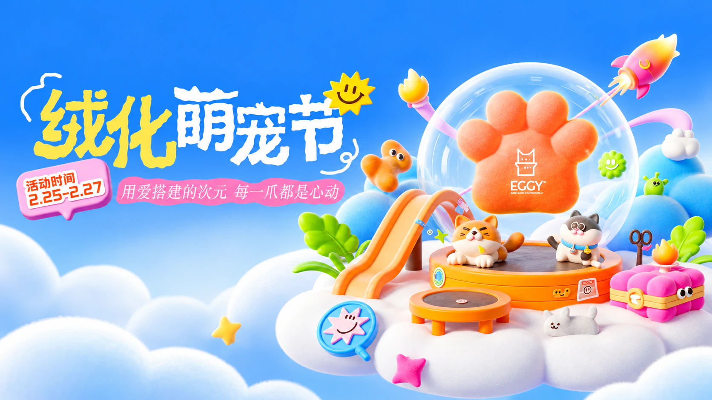
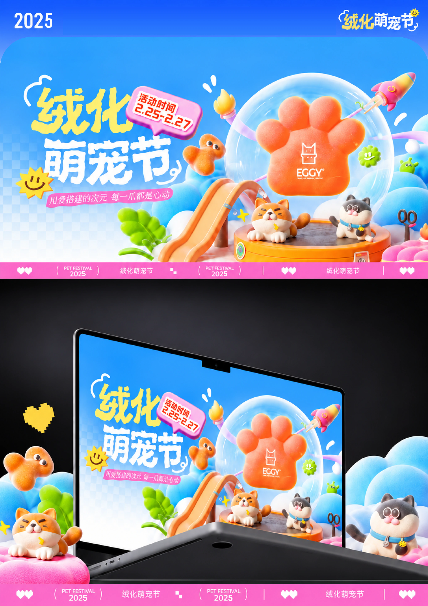
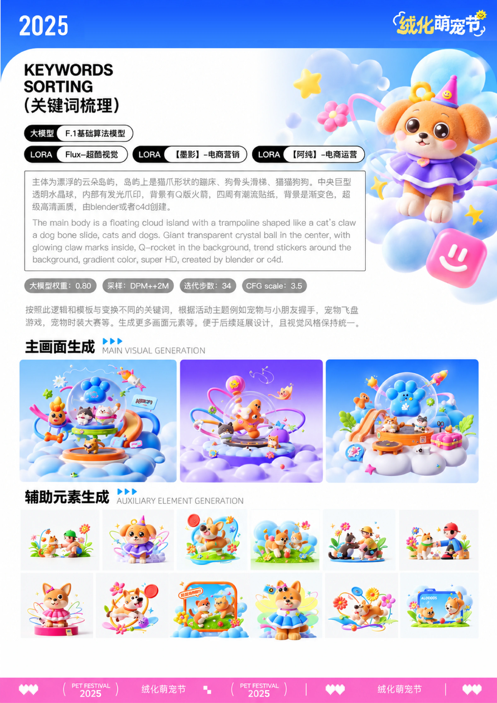
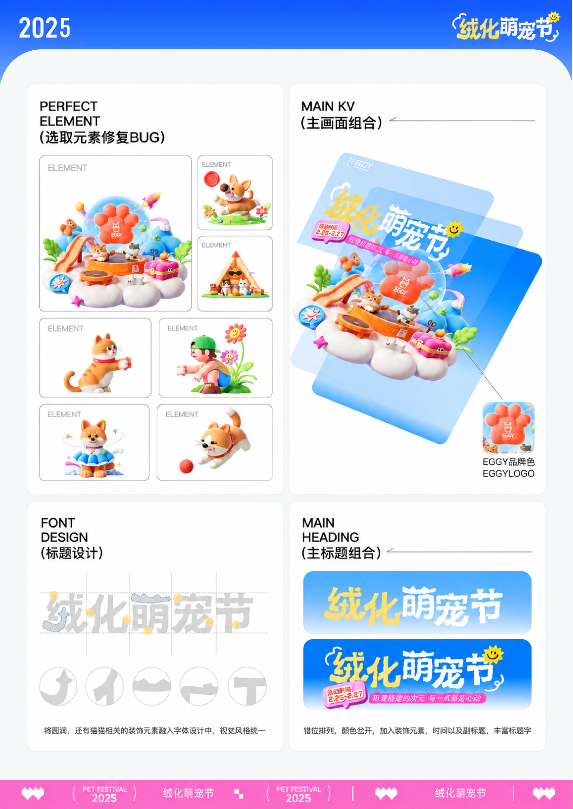
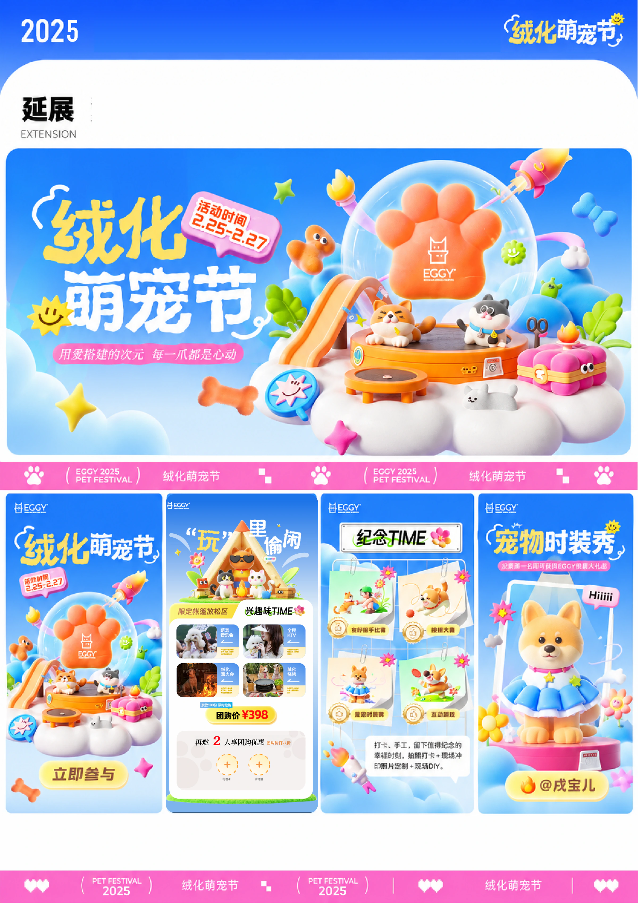
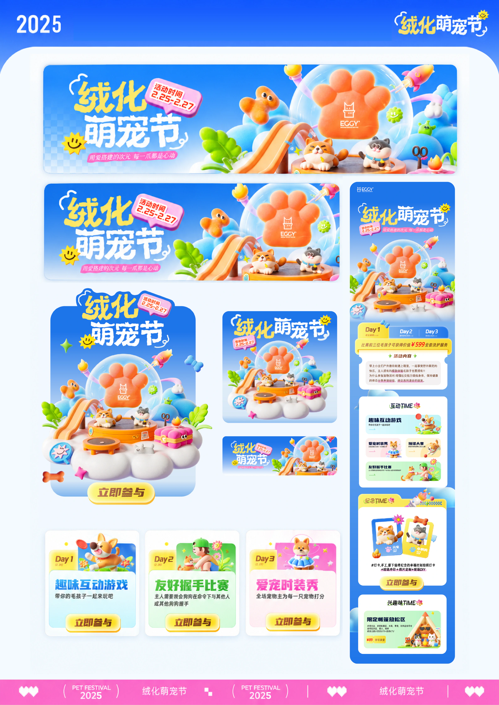

CAMPAIGN DESIGN / 活动设计
绒化萌宠节
用爱搭建的次元，
每一爪都是心动。NATURE / COMPANIONSHIP / PLAY
活动主视觉 / AI 辅助设计 / 多尺寸延展探索这个项目 ↓

01 / THE CAMPAIGN
让陪伴，
成为一场快乐的相聚。
围绕“萌宠社交”，将自然与陪伴转化为温暖、有活力的活动视觉。云朵、猫狗、爪印与游乐设施共同搭建一座轻盈的萌宠岛屿。
以趣味互动、萌宠比赛等活动内容为线索，让核心画面能够延展到活动介绍、参与入口和不同尺寸的传播场景。
- 项目类型
- 活动设计 / 萌宠主题活动
- 项目内容
- AI 辅助视觉探索 · Liblib
主视觉与标题字形
H5、Banner 与运营弹窗

02 / DESIGN PROCESS
从关键词，
到完整的活动画面。
先探索主画面与辅助元素，再选取、修复并组合画面。将宠物相关细节融入圆润的标题字形，以蓝、黄、粉的色彩关系组织信息层级。


03 / CAMPAIGN IN USE
同一个主题，
在不同场景里展开。
从 H5 活动页与多尺寸 Banner，到分主题运营页面和弹窗，保留一致的角色、字形与色彩，让活动内容在不同触点中延续。

